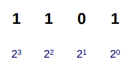
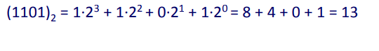
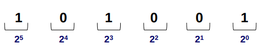
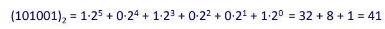

Unidad 1 · Sistemas Binarios
Sistemas Decimales y Binarios
Sistemas Numéricos
- Decimal (base 10): usa dígitos del 0 al 9.
- Binario (base 2): usa solo los dígitos 0 y 1.
- Hexadecimal(base 16): Usa 16 dígitos
- Estos sistemas numéricos representan cantidades usando diferentes bases y potencias.
Sistema Decimal
- Base 10, usado en la vida diaria.
- Ejemplo: 3210₁₀ = 3×10³ + 2×10² + 1×10¹ + 0×10⁰
| Millares | Centenas | Decenas | Unidades |
|---|
| Dígito | 3 | 2 | 1 | 0 |
| Potencia de 10 | 10³ | 10² | 10¹ | 10⁰ |
| Peso | 1000 | 100 | 10 | 1 |
Sistema Binario
- Base 2, usado en computadoras.
- Ejemplo: 10101₂ = 1×2⁴ + 0×2³ + 1×2² + 0×2¹ + 1×2⁰ = 21₁₀
Aplicaciones en Electrónica Digital
- Todos los datos de la computadora está codificada en 0 y 1
- Circuitos usan 0 (bajo voltaje) y 1 (alto voltaje).
- Transistores actúan como interruptores.
- Todo sistema digital (memorias, procesadores) opera en binario.
- Puertas lógicas procesan bits (ej. AND, OR, NOT).
Sistema Binario
- Utiliza únicamente dos dígitos (bits): 0,1
- Sistema posicional
- Para calcular la representación decimal, sumamos los pesos correspondientes a los 1’s de la representación binaria


Ejercicio
- Convertir a su representación en decimal el siguiente número binario: (101001)2
Ejercicio
- Convertir a su representación en decimal el siguiente número binario: (101001)2


Conversión de decimal a binario
Hoja de Trabajo
- Cuantos bits necesito para representar en decimal el valor 25610
- En el sistema binario con n=6 bits, cuántas diferentes combinaciones se pueden representar.
- Con n=7 bits, como se representa 9110 en binario